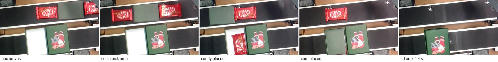
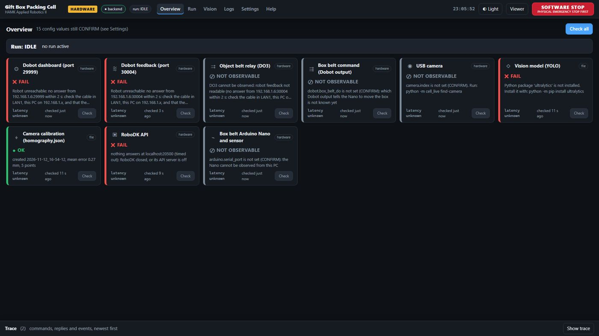
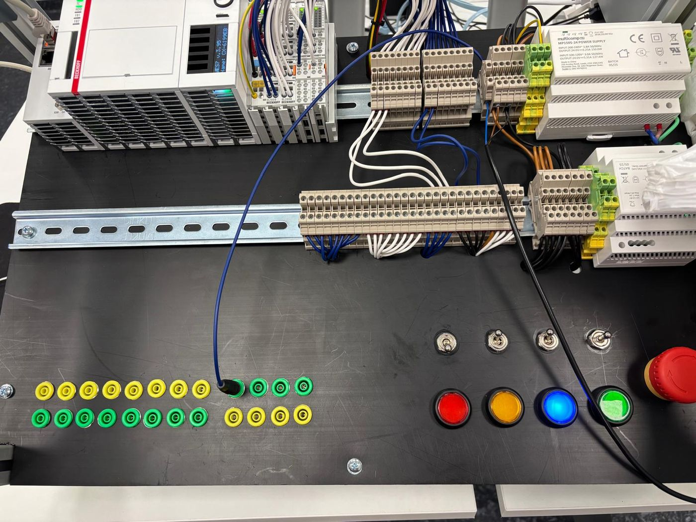
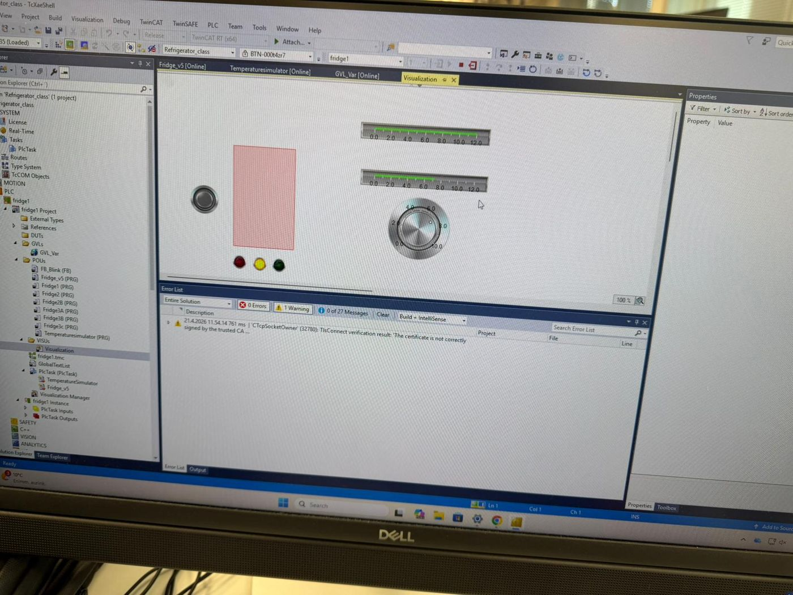

Robotic Welder, K. Hartwall Oy (via Bolt.Works Oy)Apr–Sep 2025, May 2026 to now
Operating and monitoring robotic welding cells in production, MIG welding, end-of-line quality inspection, loading parts into fixtures.
ICT and robotics engineering student at HAMK University of Applied Sciences. Helsinki, Finland.
I am in the third year of a Bachelor of Engineering in ICT and Robotics at HAMK (156 of 240 credits, graduating 2028). My project work is on robot cells: robot programming, machine vision, PLC control and the Python software that connects them.
Alongside my studies I work as a robotic welder at K. Hartwall Oy, running and monitoring robotic welding cells in production. I hold the three Universal Robots e-Series certificates and Cisco CCNA: Introduction to Networks.
A robot cell that packs Christmas gift boxes: one card and two candies go into each box, then the lid goes on. A Dobot M1 Pro SCARA arm picks with a vacuum cup. One conveyor brings the items and another brings the boxes. A camera with a YOLO model finds the items, and a calibrated homography turns pixel positions into robot coordinates.
I wrote the cell control software in Python: device checks, a safety gate the robot must pass before it moves, the pick-and-place cycle, run logging and a browser console for the operator. I also built the RoboDK simulation of the cell. Rashmika Ruwanpathirana led the project and built the conveyors and electronics. Enamul Choton did the vision and calibration.



| Runs on the real cell (17–18 Nov 2026) | 23 |
| Boxes filled and closed | 4, fastest 64.4 s at full speed |
| Camera-to-robot calibration | 0.92 mm mean error |
| YOLO model, validation set | precision 0.99, recall 1.00 |
| Software tests | 549 passing, no hardware needed |
Still open: the lid step is not reliable yet, and the final goal is to pack while the conveyor keeps moving.
A refrigerator controller in Structured Text (TwinCAT 3) running on a Beckhoff IPC with EtherCAT I/O. The door switch turns on the light, an alarm starts after the door has been open for 10 s and stays on until it is reset, and the compressor switches around the setpoint with 1 °C hysteresis. The temperature comes from an LM35 sensor on an EL3074 analog input, and a TwinCAT VISU shows the temperature and sets the setpoint.



Operating and monitoring robotic welding cells in production, MIG welding, end-of-line quality inspection, loading parts into fixtures.
More than 200 hours of listening and reading training, lesson plans for over 30 learners.
156 of 240 credits. Collaborative robotics, robot kinematics, machine vision, IoT, machine learning, networking.
GPA 5.00 / 5.00.
I am looking for internships and thesis work in robotics and automation in Finland.